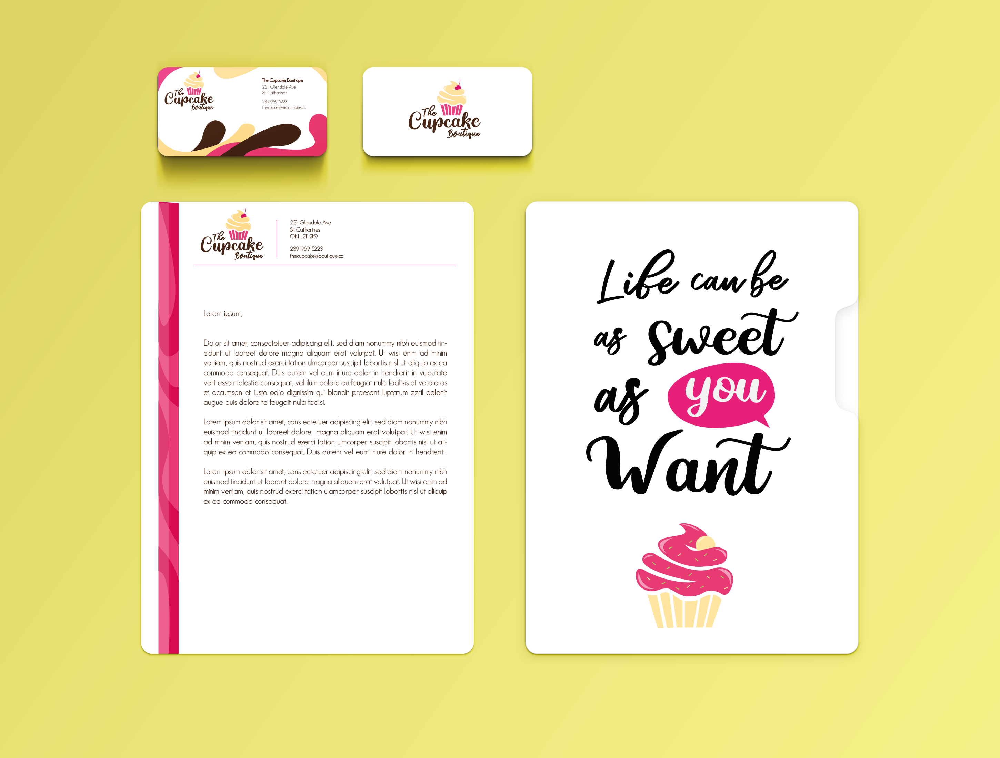
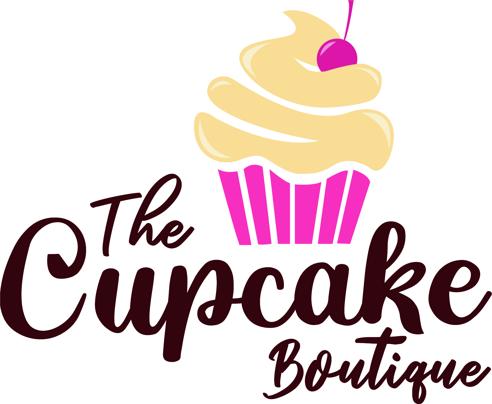

Project Objective
The Cupcake Boutique is a small retail store specialized in serving (and delivering) baked goods and ice cream. For this project I was required to create a fun, colorful logo for the company as well as business cards and other promotional materials.
 Concept
The creation process depended largely on the feedback I received, initially I designed over 25 different cupcakes, doughnuts and other baked goods. The client chose their favorite and I the composition and font were designed around the chosen illustration.


Outcome
After exploring different options and variations, the final logo meets its main purpose and is capable of attracting and engaging people of all ages who might enjoy The Cupcake Boutique’s products.